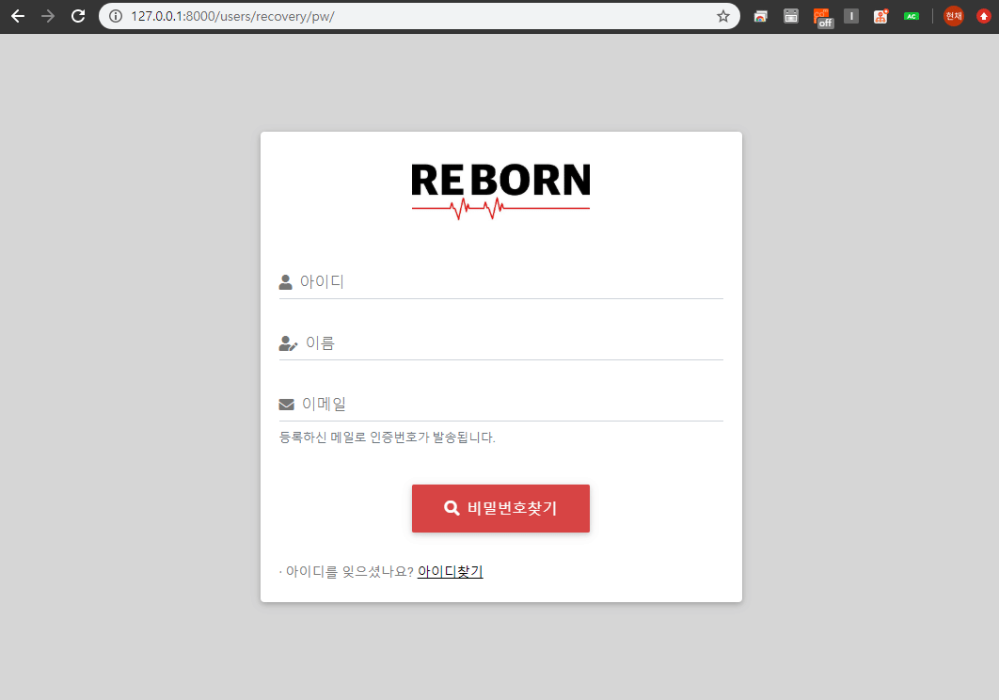

2020-03-30
Django 12. 비밀번호 찾기 구현 (AJAX)
Jquery Ajax를 활용하고 인증번호를 확인 후 사용자의 비밀번호찾기를 구현합니다.
1. 인증번호 생성 함수 구현 이전 포스트와 같이 비밀번호찾기 또한 Ajax 를 활용하여 구현합니다. 하지만 아이디찾기와는 다르게 회원가입 때 구현한 send_mail 을 활용해 비밀번호찾기 인증번호를 발송하는 기능을 추가합니다. 비밀번호찾기 로직은 다음과 같습니다.
8자리의 랜덤한 문자를 생성하는 인증번호 함수를 구현한다. 비밀번호찾기 창을 통해 이름, 아이디, 메일을 입력한 후 Ajax로 view에 요청한다. 비밀번호찾기 버튼을 클릭했을시 templates에서 인증번호 타이머 스크립트를 실행한다. Ajax요청시 send_mail 함수를 통해 요청한 사용자에게 인증번호를 담은 메일을 발송한다. 메일 발송과 함께 사용자 DB auth필드에 인증번호를 삽입한다. 입력된 인증번호가 DB auth 값과 일치하면 비밀번호변경 창으로 이동한다.
인증번호를 생성하는 함수를 구현하기 위해 send_mail 함수가 있는 users app 내 helper.py 에 아래의 소스를 입력합니다.
1 2 3 4 5 6 7 8 9 10 11 12 # users/helper.py import string import random def email_auth_num(): LENGTH = 8 string_pool = string.ascii_letters + string.digits auth_num = "" for i in range(LENGTH): auth_num += random.choice(string_pool) return auth_num
forms.py 에 아래와 같이 비밀번호찾기에 사용할 form을 작성합니다.
1 2 3 4 5 6 7 8 9 10 11 12 13 14 15 16 17 18 19 20 21 22 23 24 25 26 27 28 29 30 # users/forms.py class RecoveryPwForm(forms.Form): user_id = forms.CharField( widget=forms.TextInput,) name = forms.CharField( widget=forms.TextInput,) email = forms.EmailField( widget=forms.EmailInput,) class Meta: fields = ['user_id', 'name', 'email'] def __init__(self, *args, **kwargs): super(RecoveryPwForm, self).__init__(*args, **kwargs) self.fields['user_id'].label = '아이디' self.fields['user_id'].widget.attrs.update({ 'class': 'form-control', 'id': 'pw_form_id', }) self.fields['name'].label = '이름' self.fields['name'].widget.attrs.update({ 'class': 'form-control', 'id': 'pw_form_name', }) self.fields['email'].label = '이메일' self.fields['email'].widget.attrs.update({ 'class': 'form-control', 'id': 'pw_form_email', })
인증번호 입력 후 사용자의 비밀번호 변경 창에 사용할 SetPasswordForm 을 상속받는 CustomSetPasswordForm 을 아래와 같이 입력합나다. Django 내장폼 공식문서
1 2 3 4 5 6 7 8 9 10 11 12 13 14 15 # users/forms.py from django.contrib.auth.forms import SetPasswordForm class CustomSetPasswordForm(SetPasswordForm): def __init__(self, *args, **kwargs): super(CustomSetPasswordForm, self).__init__(*args, **kwargs) self.fields['new_password1'].label = '새 비밀번호' self.fields['new_password1'].widget.attrs.update({ 'class': 'form-control', }) self.fields['new_password2'].label = '새 비밀번호 확인' self.fields['new_password2'].widget.attrs.update({ 'class': 'form-control', })
3. views.py 작성 비밀번호찾기 GET시 매핑할 view인 RecoveryPwView 를 views.py 에 아래와 같이 작성합니다.
1 2 3 4 5 6 7 8 9 10 11 12 13 # users/views.py from .forms import RecoveryPwForm @method_decorator(logout_message_required, name='dispatch') class RecoveryPwView(View): template_name = 'users/recovery_pw.html' recovery_pw = RecoveryPwForm def get(self, request): if request.method=='GET': form = self.recovery_pw(None) return render(request, self.template_name, { 'form':form, })
비밀번호찾기 창에서 필드 값들을 입력하고 Ajax요청을 하는 view를 아래와 같이 작성합니다.
1 2 3 4 5 6 7 8 9 10 11 12 13 14 15 16 17 18 19 20 21 22 23 # users/views.py from .helper import email_auth_num def ajax_find_pw_view(request): user_id = request.POST.get('user_id') name = request.POST.get('name') email = request.POST.get('email') target_user = User.objects.get(user_id=user_id, name=name, email=email) if target_user: auth_num = email_auth_num() target_user.auth = auth_num target_user.save() send_mail( '비밀번호 찾기 인증메일입니다.', [email], html=render_to_string('users/recovery_email.html', { 'auth_num': auth_num, }), ) return HttpResponse(json.dumps({"result": target_user.user_id}, cls=DjangoJSONEncoder), content_type = "application/json")
Ajax로 요청된 값들을 User 모델에서 찾은 후 반환된 target_user 의 auth 필드에 방금 구현한 인증번호 생성함수를 통해 auth_num 를 저장합니다. 후에 send_mail 함수로 인증번호인 auth_num 을 담은 메일을 사용자에게 발송합니다.
템플릿에서 입력된 인증번호를 확인하는 view는 아래와 같습니다.
1 2 3 4 5 6 7 8 9 10 11 # users/views.py def auth_confirm_view(request): user_id = request.POST.get('user_id') input_auth_num = request.POST.get('input_auth_num') target_user = User.objects.get(user_id=user_id, auth=input_auth_num) target_user.auth = "" target_user.save() request.session['auth'] = target_user.user_id return HttpResponse(json.dumps({"result": target_user.user_id}, cls=DjangoJSONEncoder), content_type = "application/json")
마찬가지로 Ajax로 요청된 user_id 와 입력된 인증번호인 input_auth_num 가 일치하는 쿼리를 User모델에서 찾아 반환한 후 auth 세션을 생성하고 비밀번호를 찾으려는 사용자의 user_id를 세션값으로 생성합니다.
마지막으로 auth_confirm_view를 통해 Ajax통신이 성공했다면 redirect될 비밀번호 변경창의 view를 아래와 같이 입력합니다.
1 2 3 4 5 6 7 8 9 10 11 12 13 14 15 16 17 18 19 20 21 22 23 24 25 26 27 28 29 # users/views.py from .forms import CustomSetPasswordForm @logout_message_required def auth_pw_reset_view(request): if request.method == 'GET': if not request.session.get('auth', False): raise PermissionDenied if request.method == 'POST': session_user = request.session['auth'] current_user = User.objects.get(user_id=session_user) login(request, current_user) reset_password_form = CustomSetPasswordForm(request.user, request.POST) if reset_password_form.is_valid(): user = reset_password_form.save() messages.success(request, "비밀번호 변경완료! 변경된 비밀번호로 로그인하세요.") logout(request) return redirect('users:login') else: logout(request) request.session['auth'] = session_user else: reset_password_form = CustomSetPasswordForm(request.user) return render(request, 'users/password_reset.html', {'form':reset_password_form})
GET 시 auth_confirm_view에서 생성한 세션값을 비교해 False면 403 에러를 발생시킵니다. 인증된 사용자의 비밀번호 변경값이 POST 로 넘어오면 Django에서 제공해주는 SetPasswordForm를 사용하여 비밀번호 변경을 구현하기 위해 유지되고 있는 세션의 user를 login합니다. 그 후 유효성검사에 성공하면 변경된 비밀번호를 저장한 후 logout하여 세션을 해제합니다.
4. urls.py 작성 구현한 view들을 연결하기 위해 urls.py 의 urlpatterns 에 아래의 소스를 추가합니다.
1 2 3 4 5 6 # users/urls.py path('recovery/pw/', views.RecoveryPwView.as_view(), name='recovery_pw'), path('recovery/pw/find/', views.ajax_find_pw_view, name='ajax_pw'), path('recovery/pw/auth/', views.auth_confirm_view, name='recovery_auth'), path('recovery/pw/reset/', views.auth_pw_reset_view, name='recovery_pw_reset'),
5. templates 작성 templates 의 users 에 recovery_email.html 을 생성하고 인증번호가 담긴 메일의 템플릿을 작성한 후 recovery_pw.html 을 생성하여 아래의 소스를 작성합니다.
1 2 3 4 5 6 7 8 9 10 11 12 13 14 15 16 17 18 19 20 21 22 23 24 25 26 <!-- templates/users/recovery_pw.html --> <div> {% csrf_token %} <div> <label name="label_user_id" for="{{ form.user_id.id_for_label }}">{{ form.user_id.label }}</label> {{ form.user_id }} </div> <div> <label name="label_name" for="{{ form.name.id_for_label }}">{{ form.name.label }}</label> {{ form.name }} </div> <div> <label name="label_email" for="{{ form.email.id_for_label }}">{{ form.email.label }}</label> {{ form.email }} <small> 등록하신 메일로 인증번호가 발송됩니다. </small> </div> <div id="div_find_pw"> <button id="find_pw" name="recovery_pw">비밀번호찾기</button> </div> <div id="result_pw"></div> </div>
Ajax 스크립트 코드는 이전 포스트의 아이디찾기와 비슷합니다. 비밀번호찾기 버튼을 클릭 후 Ajax통신이 성공했을 경우 인증번호 입력 타이머 스크립트는 아래와 같습니다.
1 2 3 4 5 6 7 8 9 10 11 12 13 14 15 16 17 18 19 20 21 22 23 24 25 26 27 28 <!-- templates/users/recovery_pw.html --> function countdown( elementName, minutes, seconds ) { var elementName, endTime, hours, mins, msLeft, time; function twoDigits( n ) { return (n <= 9 ? "0" + n : n); } function updateTimer() { msLeft = endTime - (+new Date); if ( msLeft < 1000 ) { alert("인증시간이 초과되었습니다."); $("" + elementName).remove(); cert_ok = false; certificationNum = false; location.href = "{% url 'users:recovery_pw' %}" } else { time = new Date( msLeft ); hours = time.getUTCHours(); mins = time.getUTCMinutes(); $("" + elementName).html((hours ? hours + ':' + twoDigits( mins ) : twoDigits(mins)) + ':' + twoDigits( time.getUTCSeconds())); setTimeout( updateTimer, time.getUTCMilliseconds() + 500 ); } } endTime = (+new Date) + 1000 * (60*minutes + seconds) + 500; updateTimer(); } countdown("#timeset", 5, 0);
위 스크립트와 동일한 위치인 success부분에 auth_confirm_view와 매핑되는 ajax를 한번 더 구현하고 redirect 될 비밀번호 변경창인 password_reset.html 을 생성하면 인증번호를 이용한 비밀번호가 찾기 구현이 완료되게 됩니다.
전체 소스는 제 Github 를 참고하세요.
6. 결과 
*전체 html, css 등은 자세하게 포스팅하지 않습니다. 제 Github 에서 소스를 확인하실 수 있습니다.